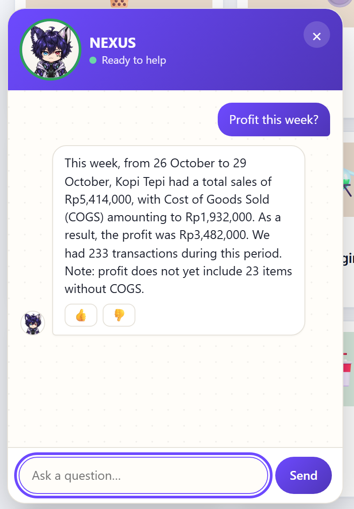
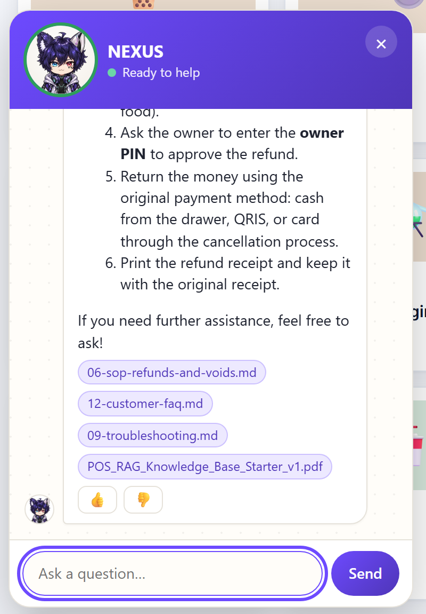
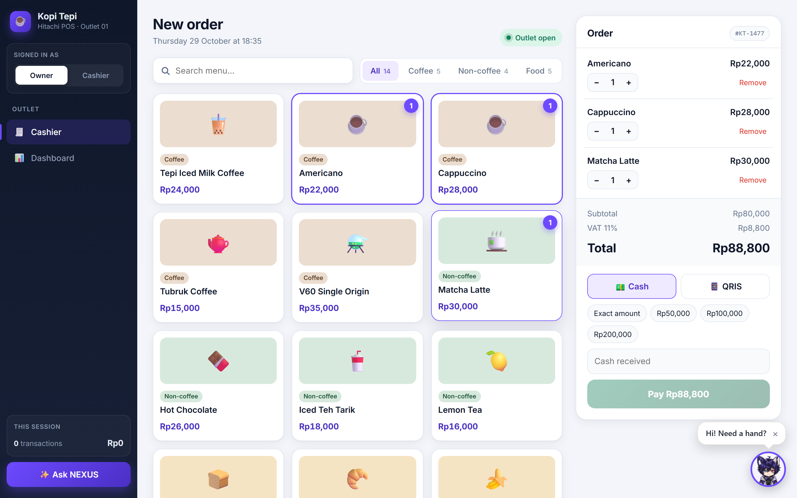
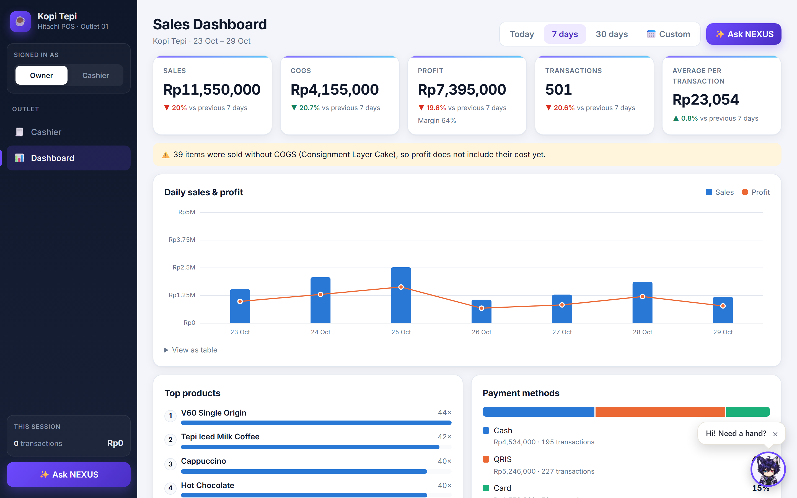
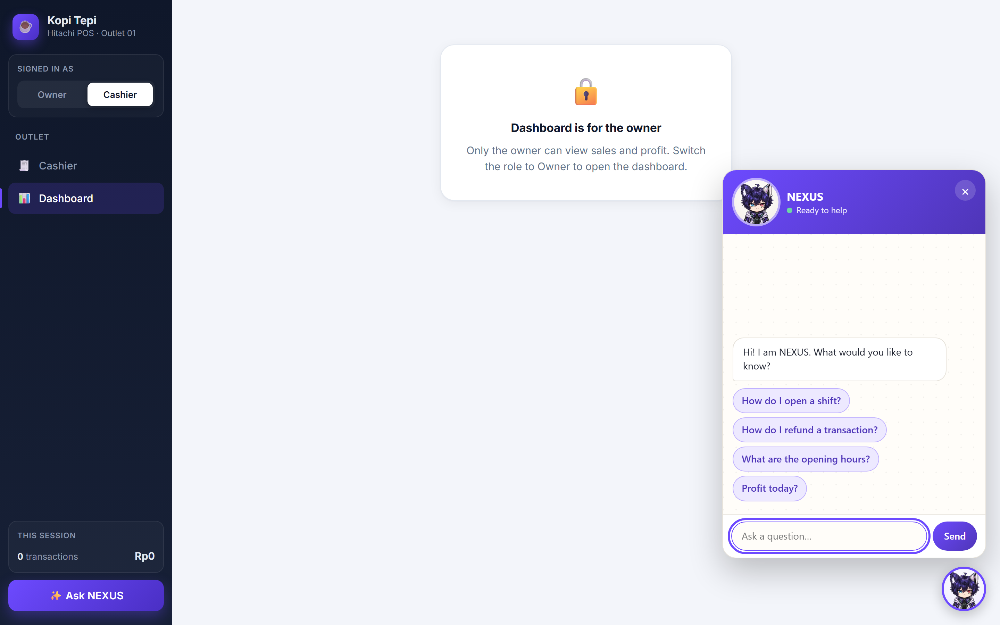

One AI assistant every internal app can embed.
Pilot: Hitachi POS at Kopi Tepi.
Each app (POS, Core Banking, ERP/HRIS) is a tenant with isolated knowledge, tools, persona and avatar. POS is the pilot.
SOPs, manuals and FAQs managed by admins. Every answer cites its source documents.
Today, yesterday, this/last week, this/last month or a custom range. Owners only.
A character avatar whose expression follows the conversation: idle, thinking, talking, happy, sad.
Read-only by design. NEXUS never writes to an application database, and profit is calculated by the POS backend, never by the model.
Preact inside Shadow DOM, one JS file. Host styles never leak in or out.
Drag the launcher to snap to any corner; the choice is remembered per app.
Answers stream token by token over SSE, rendered as safe markdown.
Source documents appear as chips under each knowledge answer.
Thumbs up/down on every answer, reviewed by admins in Insights.
Quick questions and a friendly nudge to start; configurable per host.
Accent, name, avatar from Studio; insets, z-index via CSS variables.
Host signs a short-lived JWT; on 401 the widget refreshes it once.
<ai-assistant app="pos" api="…" position="bottom-right"> · methods open() close() ask(text) · events ai-open ai-message ai-error
pos.get_profit, calls the POS report; the model never calculates.
| Period | Range |
|---|---|
| today / yesterday | one day in the outlet’s time zone |
| this_week / last_week | weeks start Monday; this week runs to now |
| this_month / last_month | calendar months |
| custom | up to 92 days, never in the future |
Role, outlet and time zone come from the verified token. The model cannot pass them, so prompt text cannot change them.
5 s timeout with one retry. Bad ranges return INVALID_PERIOD and NEXUS asks to rephrase.
WIB, WITA and WIT outlets resolve their own “today”.

PDF, DOCX, MD, TXT or a typed FAQ
pdf-parse, mammoth
~500 tokens, split on headings
local multilingual-e5-small
new version goes live
Every re-upload or FAQ edit is a new version. Activate or roll back with one click.
Embeddings run inside ai-service, so documents are not sent out for indexing.
13 Kopi Tepi knowledge docs load with pnpm seed:knowledge.
The server drives the state; the widget cross-fades the frames. Each app can upload its own character in Admin Studio.
waiting
tool running
streaming
answered with data
refused or unknown


outcome=forbidden.
List, upload files, write FAQs, see processing status, version history with activate and rollback, soft delete.
Name, persona prompt, language, LLM and fallback, score threshold, accent colour, allowed origins, avatar frames with live preview.
Knowledge gaps to resolve, thumbs-down answers, and an audit log filterable by action, outcome and date.
Supabase email login; only users listed as admins of that app get in.
Admin actions write the append-only audit log.
RS256 JWT from the host, 10-minute TTL, verified per app via JWKS.
Retrieval always filters by app and active version; tools are registered per app.
RLS on every table with no policies; only ai-service holds the service key.
UPDATE and DELETE revoked and blocked by a trigger, even for the service role.
CORS limited to allowed origins; 20 messages per minute per user.
The widget holds no keys; Studio holds only the anon key.
widget tests: states, corner snap, 401 retry, style isolation
Studio unit tests
Playwright: owner gets the exact profit, cashier refused, knowledge cited
eval target; 100% on numbers and refusals
Date ranges in 3 time zones, rupiah parser, guardrail, role check, chunker.
mock-pos responses and SSE events checked against shared zod schemas.
Scripted fake LLM: tool loop, guardrail replace, POS timeout, fallback.
Decide external LLM use, data region, and retention for conversations, audit and knowledge gaps.
Agree the profit definition (refunds, discounts, VAT, missing COGS) and provide a staging endpoint.
Core Banking and ERP/HRIS reuse the same widget and service with their own knowledge and tools.
Thank you. Questions?